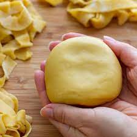

Pasta Dough

Description
This is a basic recipe for making pasta dough that can be rolled out
and formed into many different shapes and sizes.
Ingredients
Method
- Tip pasta onto a clean working bench and make a well in the middle
- Crack eggs into the well and gradually combine with a fork
- Once the mixture gets tough to use a fork with, use hands to kneed the ingredients into a ball of dough.
- Kneed for at least 10 minutes until the dough springs back to the touch and feels smooth.
- Mould into a flat shape, cover in glad wrap and store in fridge until needed
Return Home